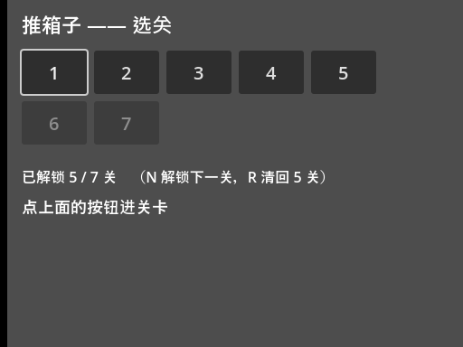
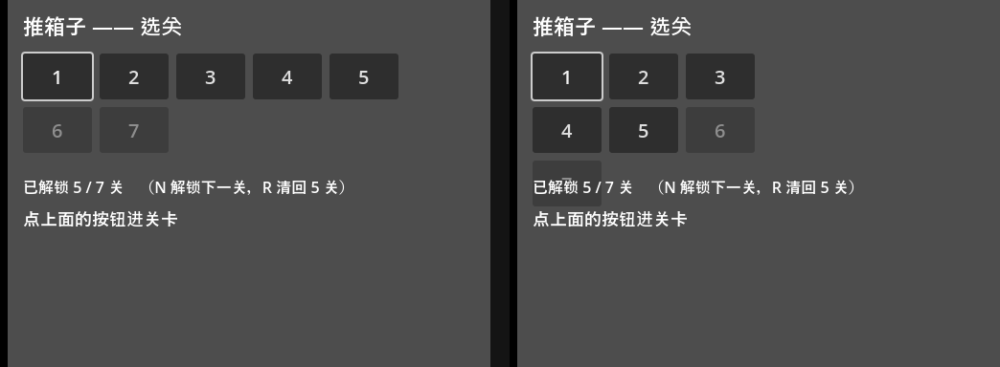
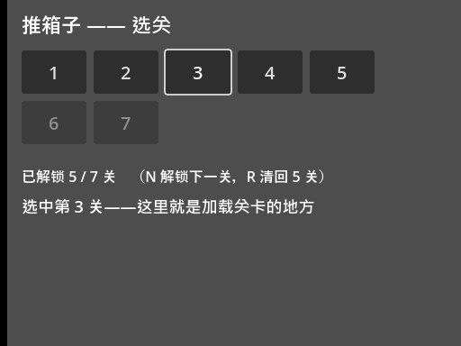
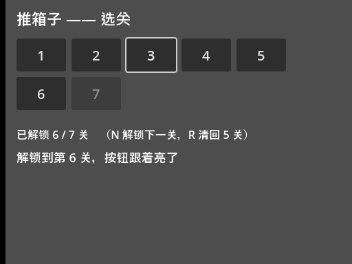
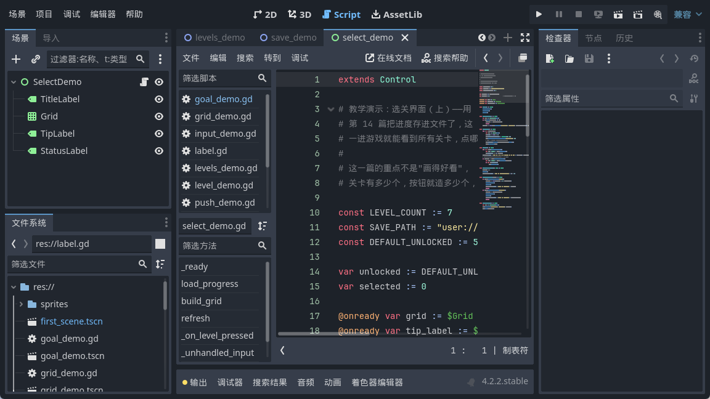

大家好，我是「山岚的运维笔记」。
上一篇进度存得住喇，不过入关卡仲要按 N 一关一关咁挪。想重打第三关？由第一关一路按过去，按到手都软。
今日整个选关界面，所有关卡摆成一排按钮，点边关就入边关。
先说为什么不用手摆。
你现在有 7 关，从工具箱拖 7 个按钮到场景里，改改文字，摆整齐，也就一盏茶的功夫。但我手上这个项目最终是 237 关，你让我拖 237 个试试？拖完还得给每个接信号，接完还得保证顺序不出错——呢个唔系写程序，系自己同自己埋雷。
动态生成才是正路：关卡有多少个，按钮就造多少个。加一关，按钮自动多一个；删一关，自动少一个。代码写返一次，以后就唔使再理。
按钮谁来摆？不用你摆，交给网格容器。子节点按顺序往格子里塞，塞满一行换下一行，一行塞几个就一个数字的事。
这个数字改起来有多省事，看图就知道：


代码一行都冇改，排版即刻变咗样。以后做 10x10 的关卡页，也就是改个数字的事。
代码造按钮，就三步：new 出来、设属性、挂进容器。
循环里先造一个新按钮，这时候它还没进场景树，看不见也点不着；然后写上显示的文字、定好最小尺寸、把字号调大；最后挂进网格容器，它才算真正上了台。
有个容易漏的细节：容器里格子的大小跟着最大的子节点走。按钮上面就得一两个字符，唔定个最小尺寸，七个按钮会缩成一小坨。
最要紧的一步来了。七个按钮都连到同一个回调，那回调怎么知道按下的是第几个？
傻办法系每关写一个回调，七个函数生得几乎一样，咁就又返到手摆按钮嘅老路。
正统办法是 bind：把参数焊在信号连接上。连信号的时候写一句 bind(编号)，这个按钮触发时，编号就一起带给回调。第 0 个按钮焊了个 0，第 6 个焊了个 6，各归各的。
这里有个我踩过的坑：bind 绑的是当时的值。循环里变量每圈都在变，但 bind 在连接那一刻就抄了一份存起来，之后怎么变都跟这个按钮无关。所以七个按钮拿到的编号各不相同，不会全变成最后一个数。这点跟某些语言里闭包捕获循环变量的坑正好相反，用 bind 反而省心。

解锁数从存档读回来，锁就一个判断的事：编号大于等于解锁数的按钮，全部 disabled。
被 disabled 的按钮会变灰、点不动，视觉和逻辑一起到位，一行额外的代码都不用写。
按钮亮了灰了要跟着变，怎么改？我见过不少人（包括几年前的我）写出来的版本是这样：把网格里的按钮全删掉，重新跑一遍造按钮的代码。
用得，不过有两个坑。一是挂子节点的操作只管加不管减，忘了先删旧的，按钮越点越多，最后满屏都是数字；二是重建会把所有状态打回原形——焦点没了、按到一半的动画没了。
正确的姿势是：按钮是死的，状态是活的。按钮造一次就够，之后解锁数变了、选中项变了，都只改属性，跑一遍刷新完事。

我实测过：按 N，第 6 关由灰变亮；按 R，佢又灰返。同一批按钮，一亮一灰，按钮由头到尾都冇死过。这就是刷新和重建的区别。

最后送个彩蛋。截图里的操作我全程没用鼠标——方向键把焦点挪到目标按钮，空格按下确认。
这不是我写了什么键盘控制代码，是引擎的 UI 系统自带的：焦点会自动顺着方向键在容器里走，空格和回车默认就是"激活当前焦点控件"。你只要保证按钮能拿到焦点（默认就能），剩下的白嫖引擎。
这一篇的关键词就三个：动态生成、bind、刷新而不是重建。
按钮数量跟着关卡数走，从此加关卡不用碰界面；bind 让一份回调伺候所有按钮；状态变化只改属性，不折腾节点。这三招不只在选关界面好使，背包栏、技能栏、成就列表，凡是"数量不定、长得一样"的界面，全是这套打法。
下一篇是选关的下半场：关卡多了以后一页放不下，做分页；再给按钮加个实时预览——鼠标停在按钮上，能先看到那一关长什么样。
选关界面搞掂喇，值得点赞、在看来一套；想跟完整个系列嘅，关注「山岚的运维笔记」，下一篇接着。评论区有问必回。